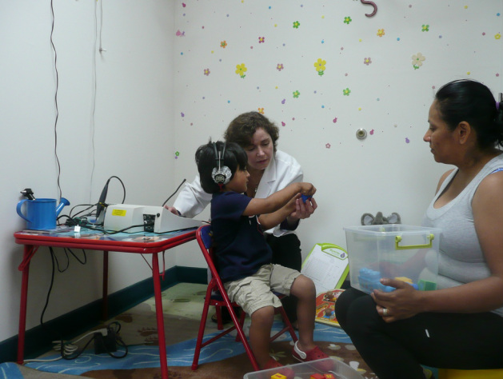

HEARING EVALUATION AND SERVICES
At the Audiology Center of Maryland, we provide outstanding audiologic expertise to patients of all ages (from newborn to adult). Using highly sophisticated equipment and techniques, we provide diagnostic hearing evaluations, evaluation of amplification needs (including hearing aids), and other related counseling/consultation for all of our patients.
Comprehensive Audiological Evaluation
We offer the latest technology hearing aids from all leading brands including: Oticon, Widex, Unitron, Siemens, and Starkey in every style and size to ensure that our patients achieve a better quality of life through improved hearing. We also offer unlimited office visits included throughout warranty period of the instrument.
Hearing Aid Services
To determine type and severity of hearing loss. It consists of hearing threshold and speech testing, performed in a sound-proof room to properly assess whether a hearing loss is medically treatable.
Tinnitus Management
Tinnitus is the perception of unpleasant internal sound/s without an external source. Methods to treat/reduce the negative impact of the tinnitus sensation, using FDA approved state of the art technology with latest and highly successful management skills.
Cerumen Management
Ear Wax removal.
Benign Paroxysmal Positional Vertigo (BPPV) Treatment
BPPV is a condition of the inner ear and is the most common of vestibular disorders. Each BPPV episode usually lasts between a few seconds to couple of minutes.With BPPV you often feel nauseated, but rarely vomit.
Benign: A disease without complications/with no serious underlying cause.
Paroxysmal: Sudden and recurring episodes of symptoms
Positional: The BPPV episodes are triggered by certain head positions.
Vertigo: A spinning sensation, floating, and unsteadiness.
Conditioned Play Audiometry
Audiologic evaluation used with toddlers and preschoolers (ages 2–5).
Visual Reinforcement Audiometry (VRA)
Audiologic evaluation used with infants and young toddlers, aged 5 months to about 2.5 years of age.
Tympanometry/Impedance Testing
Middle ear Analysis.
Oto-acoustic Emissions (OAE)
A non-invasive measure of cochlear (inner ear) function.
Auditory Brainstem Response (ABR)
A non-invasive measure of the activity of various parts of the nerve pathway form the ear to the brainstem. Used for all ages, including newborns.
Custom Earpieces
Used for cell phones, personal music players, musician molds, noise protection/ hunting earplugs, swimming ear plugs, etc.
The complete audiological evaluation process is usually completed within 45 minutes, and the evaluation results can be discussed following completion of the evaluation.
HOW TO BECOME OUR PATIENT
Audiology Center of Maryland is contracted to many insurance companies. As a patient, you are responsible for making sure that your services are covered by your insurance company. We do accept patients that do not have insurance; payments can be made using credit cards, checks, or cash.
PPO
If you have PPO option with your insurance, you can call us directly to make your appointment; please make sure you have your insurance card ready when you call.
HMO
If you have an HMO option with your insurance, you will require a referral and/or authorization prior to coming to our center in order to make an appointment. More information is available below under the "Referrals" section.
Medicare
Patients who have Medicare insurance will require a referral from their primary physician.
Medicaid
Children with straight Medicaid are welcomed. However, adults who are under Medicaid also will need supplemental insurance. As a patient, it is important that you know of any limits to your benefits. For example, some insurances exclude certain diagnoses or restrict the number of visits you can have throughout one calendar year. You will ultimately be financially responsible if your insurance does not pay for the provided services you receive.
We also offer a courtesy low flat rate assigned for those who do not have insurance.
INSURANCES ACCEPTED
We accept most major employer-sponsored medical insurance. Below is a list of most of the insurances we cover. If you do not see your insurance listed below, please call our office at (301) 337-6920.
Aetna
BCBS
CareFirst Blue Choice
Cigna
CoreSource/NIH
Maryland Physician Care
Medicaid – Children Only
Medicare
MedStar
Priority Partners – Johns Hopkins Medicine
TriCare*
United Healthcare
*TRICARE is a regionally-managed health care program for active duty and retired members of the uniformed services, their families, and survivors. VA bills TRICARE for non-service connected medical treatment.
REFERRALS
Patients are referred by their physicians, speech language pathologists, audiologists, other professionals, early childhood intervention programs, and parents. Alternatively, your doctor may give you a prescription, which you may bring into our clinic at the time of your appointment. A patient also has the option to self-refer; however, we require physician order and insurance referral to avoid third-party reimbursement problems.